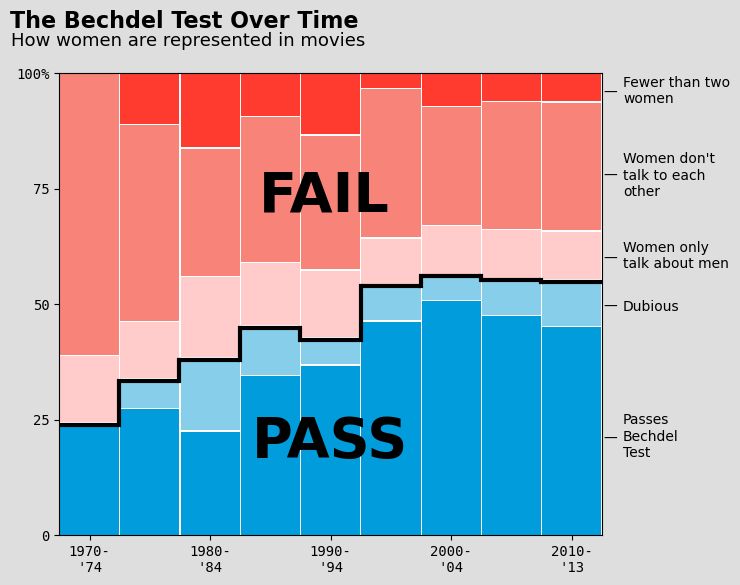
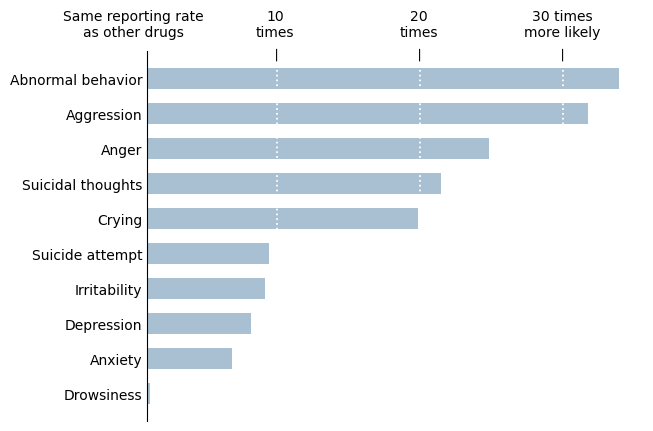

Hi! I am currently a student at the University of Michigan double majoring in Data Science and Biopsychology, Cognition, and Neuroscience with a minor in Quantitative Methods in the Social Sciences. I am graduating this coming May 2025, taking a two week trip to Europe with my roommate and my sister, and then hope to start a full-time position soon after. I think creating good data visualiations is crucial for understanding data trends and am therefore super excited for this class!
The following visualizations were created as part of the course SI 649.
 